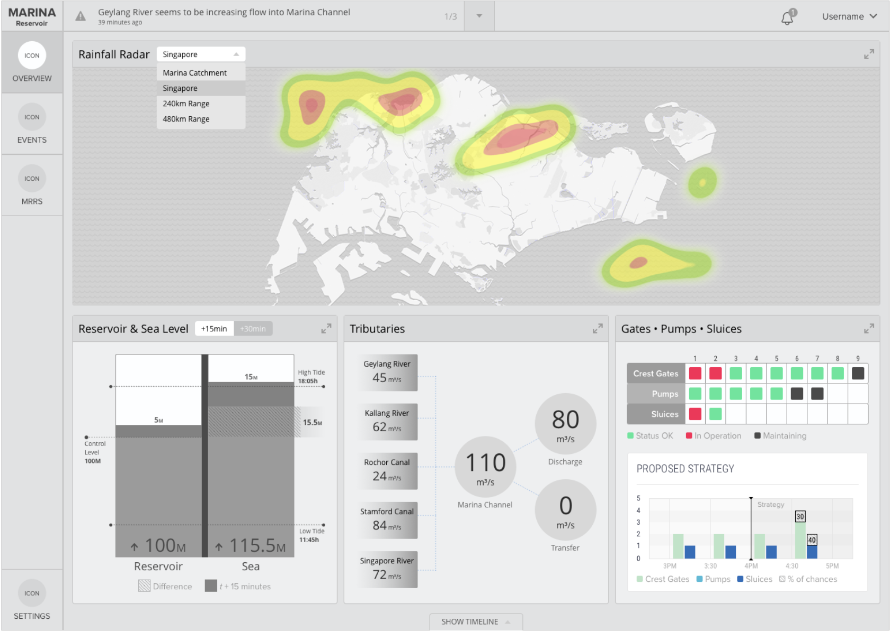

Team
UXs, Product Manager, PUB Department Experts, SUEZ Business and Engineer.
Suez Environnement + PUB Singapore
Transforming complex operational workflows into actionable insights that empower operators to make faster, smarter, and more confident decisions.
UXs, Product Manager, PUB Department Experts, SUEZ Business and Engineer.
Built domain expertise through extensive research, identified key challenges and opportunities, and transformed insights into a user-centered dashboard design.
During a storm or water quality incident, PUB operators need to respond quickly to manage water networks in Singapore. I worked with Suez Environnement to design an integrated dashboard that visualizes data effectively and helps operators make better decisions.
Improve the current touchpoints and help operators make faster decisions.
To understand the needs of the different departments, I led a discovery phase consisting of workshops, user interviews, contextual inquiries, and shadowing sessions with PUB employees and stakeholders across water quality, flood control, recirculation, and reservoir level management departments.
This research built the domain expertise required to navigate a complex operational environment while uncovering key workflows, behaviors, pain points, and unmet needs. The insights gathered informed strategic opportunities and laid the foundation for a more user-centered solution.
By centralising and analysing data, the software solution can anticipate the hydraulic performance of the network of the natural ecosystem.
Calculate and present clearly the best control strategy, and automatically and remotely monitor the system's facilities.
Deploying this system can cut the volumes of stormwater that flow into rivers or the sea by up to 45%.



The hero image was sourced from Singapore Marina Barrage.